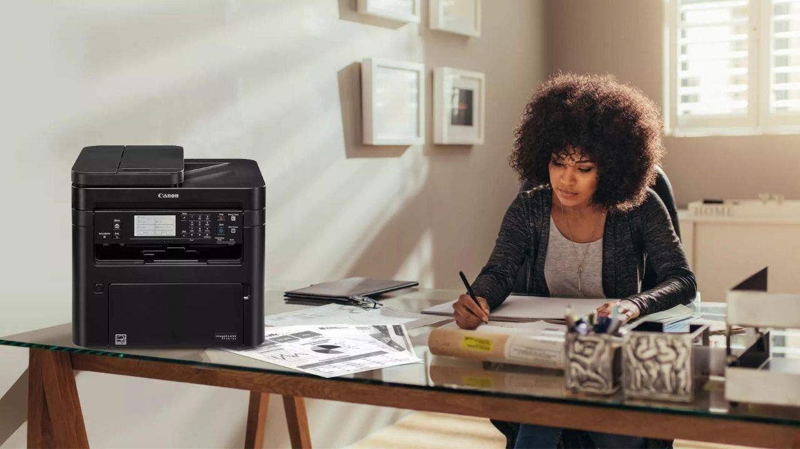

Do this before you toss, donate or sell your printerI thought it was the ink running out, but it turns out my inkjet of 5+ years was on its way to the grave. Printers don't last forever, and there are always newer and better models entering the market, so naturally, you're eventually going to want to get rid of your old ones. However, many printers are now wireless, meaning they have to be connected to your Wi-Fi network to work properly. This means that information like your password, network type, assigned IP address and more get stored on your printer, and that information doesn't just go away when you decide to throw away or sell your printer. That's why Canon is warning anyone who uses their home, office, or large-format inkjet printers to follow these steps before getting rid of their printer. Here's what you should do first. Canon warns customers of data retention issues in wireless printers Canon specifically focused on its own wireless printers, and the company warned its customers that if a hacker obtains an old wireless Canon printer that has not had the previous owner's information wiped from it, the hacker can steal that data and use it for their gain. Some of the Canon printer models that have already been affected by this unfortunate circumstance include the E, G, GX, iB, iP, MB, MG, MX, PRO, TR, TS, and XK series. Canon also published its own document listing every model that has experienced data retention issues, so customers can easily check if their model has been affected. What should I do before getting rid of my old printer? If you specifically have an old Canon printer that you're looking to get rid of, Canon also announced the process you can follow for wiping all your data from the printer, depending on what model you have. These are the instructions that the company provided: How to reset your Canon printer Go to Reset settings Click Reset all Enable the wireless LAN Reset all settings one more time How to reset your Canon printer without the Reset all function If your Canon printer does not have a Reset all function within its settings menu, then you can follow these steps: Reset LAN settings Enable the wireless LAN Reset LAN settings one more time If you find that your Canon printer does not have these settings, then it would be best for you to refer back to your printer instruction manual to see what the process is for your specific model. And you can find out more about my picks for the best printers on the market this year. What if I don't have a Canon printer? If you have another type of wireless printer that is not a Canon, you should still follow the steps to reset your printer settings before getting rid of it. Your printer should have come with a manual for how to do that, so look into those steps before tossing your old printer out. If you have a printer that you're not getting rid of; then you should at least be making sure that your Wi-Fi network is safe and secure so that your printer does not get hacked while you're still using it. Kurt's key takeaways Getting your information stolen can be a huge nightmare, especially when you could have prevented it by taking a few extra steps. Don't be the next victim of a malicious hacker, and make sure you know how to reset your printer's settings before tossing or selling it. With technology advancing more by the day and everything going paperless, do you think printers are now a thing of the past? Let us know by writing us at Cyberguy.com/Contact For more of my tips, subscribe to my free CyberGuy Report Newsletter by heading to Cyberguy.com/Newsletter Copyright 2023 CyberGuy.com. All rights reserved. |
 |